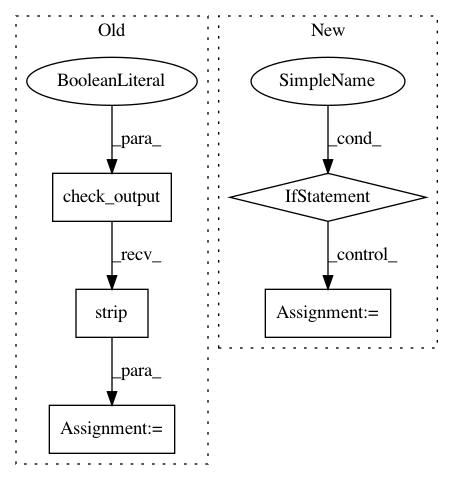

82f9c7014e2d0acd3e3869066f5dc3142ec9e7a7,python/ray/autoscaler/_private/command_runner.py,KubernetesCommandRunner,_home,#KubernetesCommandRunner#,250
Before Change
"exec", "-it", self.node_id, "--", "printenv", "HOME"
]
joined_cmd = " ".join(cmd)
raw_out = self.process_runner.check_output(joined_cmd, shell=True)
self._home_cached = raw_out.decode().strip("\n\r")
return self._home_cached
class SSHOptions:
After Change
@property
def _home(self):
if self._home_cached is not None:
return self._home_cached
for _ in range(MAX_HOME_RETRIES - 1):
try:
self._home_cached = self._try_to_get_home()
return self._home_cached
except Exception:
// TODO (Dmitri): Identify the exception we"re trying to avoid.
logger.info("Error reading container"s home directory. "
In pattern: SUPERPATTERN
Frequency: 3
Non-data size: 5
Instances
Project Name: ray-project/ray
Commit Name: 82f9c7014e2d0acd3e3869066f5dc3142ec9e7a7
Time: 2020-12-17
Author: 62982571+Gekho457@users.noreply.github.com
File Name: python/ray/autoscaler/_private/command_runner.py
Class Name: KubernetesCommandRunner
Method Name: _home
Project Name: CyberReboot/poseidon
Commit Name: 5cb94b6e5b7b338fd93eaf630ce0bdd634bffcc1
Time: 2016-08-15
Author: tlanham@cs.stanford.edu
File Name: poseidon/poseidonStorage/poseidonStorage.py
Class Name: poseidonStorage
Method Name: __init__
Project Name: CyberReboot/poseidon
Commit Name: 1e31662e13af69823c58cbc4c4332b8530aaaa47
Time: 2016-08-12
Author: tlanham@cs.stanford.edu
File Name: poseidon/poseidonStorage/poseidonStorage.py
Class Name: poseidonStorage
Method Name: __init__